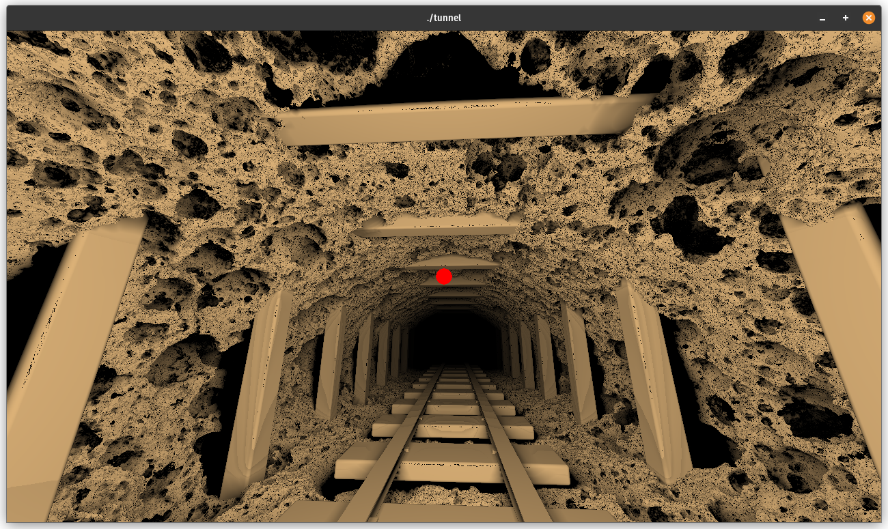

Tunnel Dokumentation
Das Prinzip dieses Projektes ist es zu experimentieren was alles mittels impliziter Grafik möglich ist und wo gegebenenfalls auch Schwierigkeiten im Vergleich zu expliziter Darstellung liegen.
Dazu hat jeweils jede Person einen Tunnel in einem Shader implizit definiert und darauf verschiedene Effekte, wie Pathtracing und Ambient Occlusion implementiert, welche dann hintereinander gerendert werden.
Die drei enstandenen Tunnel sind:
- Ein Voxel basierter Tunnel, um mit Voxel Umformungen zu experimentieren
- Ein Rohr um mit Echtzeiteffekten wie Ambient Occlusion und Shadow Mapping zu experimentieren
- Eine Höhle um mit Lichtinteraktionen durch Pathtracing zu experimentieren
Alle Tunnel wurden mittels Ray-Marching implementiert, wobei eine SDF definiert wird, welche zu eine Inputposition den Abstand zu der nächsten Position der Umgebung zurückgibt.
Damit werden dann Strahlen in die Szene geschossen, bei denen jeweils die Entfernung der SDF nach vorne geschritten wird, bis ein Threshold erreicht wird. Zurückgegeben wird dann die insgesamt zurückgelegte Entfernung.
Voxel Tunnel
Rohr
Höhle
Vorab Bekannte Schwierigkeiten
Ziel war es einen Pathtracer zu implementieren, durch den verschieden-farbige Lampen an den Wänden Licht an alle Stellen der Höhle strahlen können.
Bevor überhaupt begonnen wurde war bereits klar, dass es unmöglich sein wird dies in Echtzeit umzusetzen, geschweige denn in kurzer Zeit zu rendern.
Im Laufe der Arbeitszeit war die Überlegung das Pathtracing-System auch auf die anderen beiden Tunnel anzuwenden, was, aber den zeitlichen Rahmen für das Rendern sprengen würde.
Dadurch ist das nun implementierte System aber sehr abgeschlossen und kann ohne viel Arbeit in ein weiteren Shader mit Ray-Marching übernommen werden.
Dabei war ebenfalls klar, dass man sich in einem Tunnel befindet und somit kein Sonnenlicht existiert. Dies hat zur Folge, dass ein Großteil der Strahlen bei simplem Pathtracing ins leere schießen und somit nicht zum Licht beitragen.
Umgebungsdefinition
Begonnen wurde erstmal damit simple Formen und Operationen, wie Würfel und Rotationen zu definieren.
Besonders bei der Rotation entstanden bereits einige komische Fehler, wie dass das rotierte Objekt abgeschnitten wird.
Sobald alle Grundoperationen korrekt implementiert wurden war es relativ simpel den Rest der Grundszene zu bauen.
An dieser Stelle wird auf die SDF einfach eine Noise-Textur addiert, wodurch die rauhe Darstellung entsteht. Dies lädt aber auch diverses Experimentieren mit anderen Funktionen ein, wie modulierten sinus-Kurven.
Bei den stärkeren Noise-Operationen wird aber auch bereits eine schwäche von Ray-Marching offengelegt. Eine Addition auf Distantfunktionen resultiert nämlich nicht in einer weiteren korrekten Distanzfunktion, weswegen sich in diesem Fall die schwarzen Stellen entwickeln.
An diesen Stellen springt der Strahl wegen den falschen Distanzfunktionen zu weit und trifft das korrekte Ziel somit nicht.
Es existiert aber auch eine Lösung zu diesem Problem, welche aber um einiges mehr Rechenzeit benötigt. Dabei werden iterativ immer kleiner werdende Objekte an der Wand platziert und mit dieser verbunden. Dadurch entsteht eine rauhe Darstellung, ohne, dass die SDF falsch wird.

Der nächste Schritt ist es eine Möglichkeit zu haben um aus der Distanzfunktion auch Materialinformationen zu erhalten. Um dies zu erreichen wird aus jeder SDF nun anstelle einer Distanz, ein "Object" zurückgegeben, welches die Distanzinformationen, sowie Materialinfos beinhält.
Diese können dann bei dem Rendering genutzt werden.
Der letzte Schritt ist es nun die Lampenpositionen zu definieren. Anfänglich waren diese statisch auch in dem Shader definiert, aber dies ist sehr unhandlich, da wegen dem Fehlen eines Sonnenlichtes sehr viele Lampen nötig sind.
Deswegen wurden diese außerhalb in c++ generiert und dann mit Uniforms in den Shader eingebunden. Die SDF für die Lampen iteriert über alle Lampen und gibt die mit der kleinsten Entfernung am Ende aus.
Rendering
Anfänglich wurden zum Testen von der Umgebung die Schatten direkt basierend auf Punktlichtquellen implementiert, was aber schnell auch mit dem neuen Pathtracer ersetzt wurde.
Dabei entstanden aber auch bereits Probleme mit falschen SDF-Werten, wodurch Schatten falsche berechnet wurden.
Der Pathtracer ist ein simpler cosine-weighted Pathtracer, da es zeitlich leider nicht möglich war, weitere schnellere Gewichtungen erfolgreich zu implementieren.
Die größte Schwierigkeit dabei war es den Code korrekt zu implementieren, sodass der PC bei dem Ausführen nicht wegen der großen Last im Shader abstürzt und den folgenden Output generiert.
Dies wurde gelöst, indem pro Shader-Durchlauf nur ein einziger Sample berechnet wird und diese Outputs dann mithilfe des Alpha-Kanals in OpenGL addiert werden, bis das vollständige Bild gerendert wurde.
Bei dem setzen des Alpha-Wertes wird noch die Stärke der Farben insgesamt erhöht, indem Alpha nicht auf 1/samples gesetzt wird, sondern nur auf 1/5, da ein großteil der Samples schwarz sind. Dadurch wird zwar teilweise Realismus verloren, aber die Konvergenz wird erhöht.